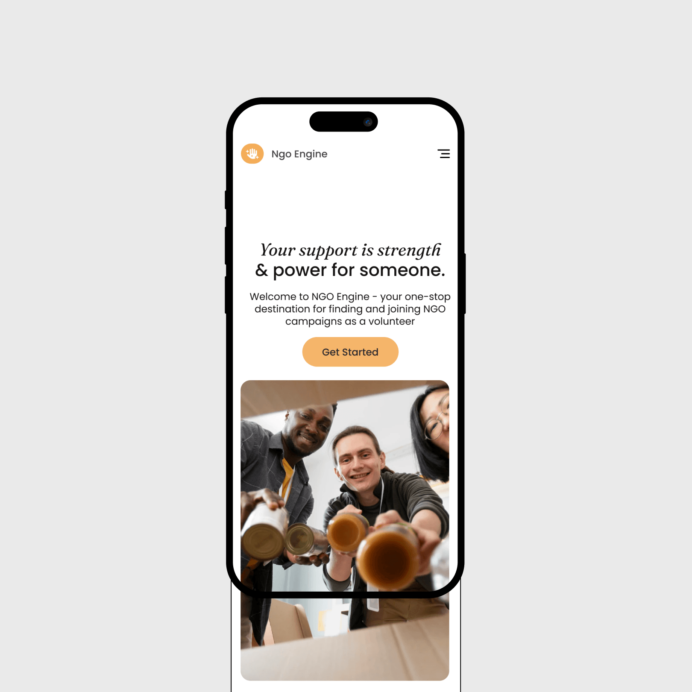
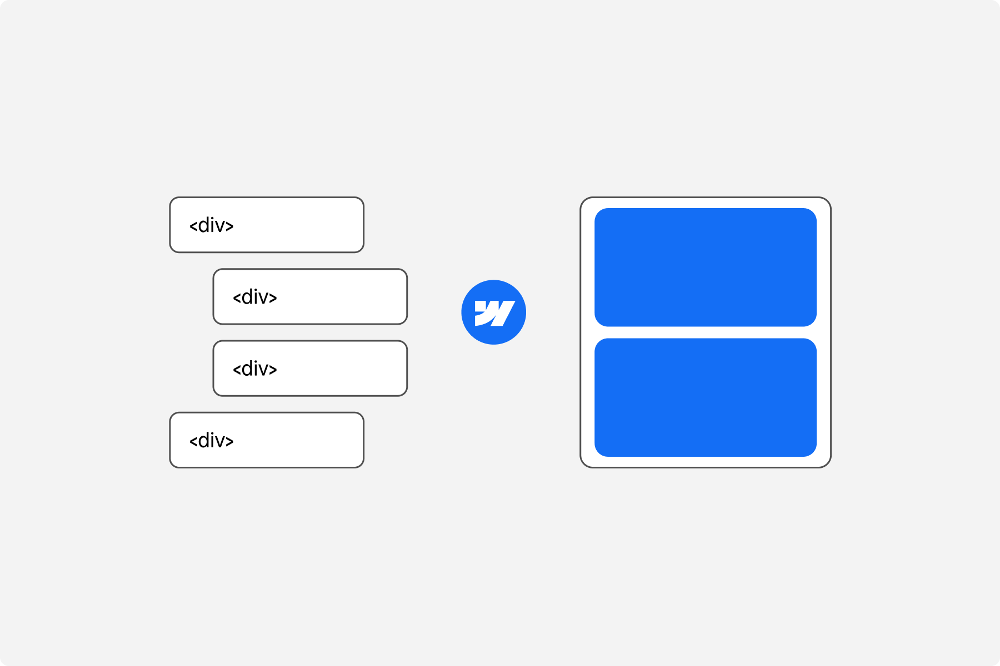
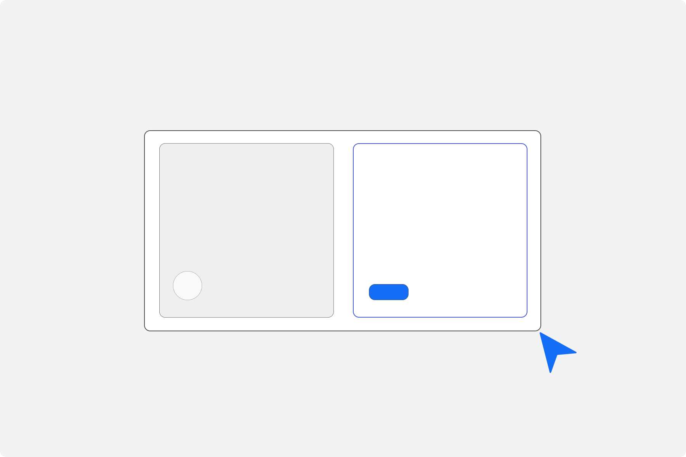
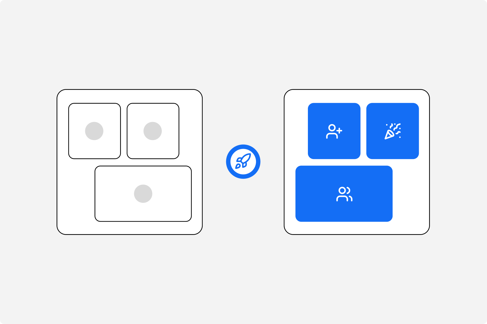

Product Designer who Builds with Webflow
SaaS, AI teams, and the agencies who build for them. Clear, structured interfaces — designed in Figma, built in Webflow. Sometimes both on the same project.



Selected Work
A selection of projects where I focused on clarity, systems, and real product constraints.
Wilber ↴
Adapting Google’s Material 3 Design system to meet Canadian non-profit’s needs

Affinis.ai ↴
Designing an AI-Powered Dictionary for Non-Native English Speakers

Ruminate AI ↴
An AI powered Mobile app for new Bible readers to engage with biblical text

Honest Feedback
Intentionality. That's what comes to mind when I think of Anmol. Sure, he can design, write, code, strategizeand such. But no matter the medium, what matters to him? There's deep thought and diligence behindwhatever he's creating. Frankly, if you gave him enough time and a clear goal, I doubt there's much hecouldn't do, even if that required learning something entirely new.
I highly recommend Anmol for his outstanding work as a UI/UX Designer with our team. He excels at creat-ing intuitive wireframes and customizing the Google Material 3 design system, ensuring a seamless and vis-ually consistent user experience. His collaboration with cross-functional teams has significantly improveduser flows and usability. Anmol's dedication and expertise have been invaluable to our projects.
Anmol did a fantastic job designing the logo for Expansora. From the very beginning, he captured the essence of our brand—bold, modern, and built for global growth. His creative process was smooth, collaborative, and fast. We’re thrilled with the final result; it perfectly represents our mission to help brands expand beyond borders. He is a talented designer and brand strategist. Highly recommended!
What we can build
Webflow Design
& Development

I work with SaaS and AI teams to design interfaces that are clear, structured, and built around how real users think — not how the product roadmap is organised. Dashboards, onboarding flows, design systems, key screens. I design with implementation in mind from the first wireframe.
Product &
Interface Design

I don't just hand off a Figma file. I build in Webflow — structured, scalable, and close to the design intent. Landing pages, marketing sites, multi-page builds. If it needs custom interactions or code, I can handle that too.
Design to Launch
& Engagements

I don't disappear after the design file is done. I stay involved through build, QA, and launch.Because design is iterative, not a one-time handoff. From A to Z, I'm in the loop, making improvements as the product evolves. What goes live actually matches what was designed and keeps getting better.
Tri-Phase Process

01 • Pre-Design
Before a single frame opens in Figma, we get aligned. I dig into what you're building, who it's for, and what success actually looks like. Research, reference gathering, defining the problem worth solving. This phase is where most projects are won or lost — I take it seriously.
02 • Design
This is where the thinking becomes visible. Wireframes, flows, components, and interfaces — built systematically and reviewed together. You see progress early and often. Feedback is structured so we move forward, not in circles.
03 • Ship
Design doesn't end at handoff. I build in Webflow, review in the browser, and make sure what's live matches what we designed. Clean files, clear handoff, no loose ends. You get a product ready for the world — not a Figma file ready for someone else to figure out.


Got a Product that needs
to look and work the part
I'm currently taking on new projects. If you're building something early-stage and need a designer who can think through the problem and build the solution
— let's talk. No lengthy proposals to start. Just a conversation.
or
Shoot me an Email
Hello@itsanmol.com